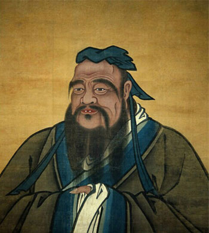

“至圣”孔子简介
孔子（公元前551年—前479年），名丘，字仲尼，春秋末期鲁国（今山东曲阜）人，中国古代著名思想家、教育家、政治家，儒家学派创始人。
孔子的祖先是殷人，后为避宋国之乱迁居鲁国。孔子早年丧父，生活贫苦，由母亲颜氏抚养成人。孔子15岁志于学，30岁学有所成，设教授徒，相传有弟子三千，贤者七十二。51岁从政，历任鲁国中都宰、司空和大司寇。55岁开始周游列国，历时14年，行程数千里，颠沛流离，始终未能实现其政治抱负。68岁回到鲁国，潜心于古文献整理，删《诗》《书》、定《礼》《乐》、序《周易》、作《春秋》，开创了“祖述尧舜，宪章文武”的儒家学派。
其主要思想为：
一以贯之的仁爱思想。“仁”是孔子思想的核心，是其思想体系中“一以贯之”的总纲。“仁”就是“爱人”，其前提是“孝悌”“爱由亲始”“推己及人”，直至仁爱天地间的万事万物。
允执其中的中庸思想。中庸就是“用中”，就是不偏不倚。孔子说：“中庸之为德也，其至矣乎！民鲜久矣。”他倡导中庸之道，同时意识到用中之难，说：“天下国家可均也，爵禄可辞也，白刃可蹈也，中庸不可能也。”要做到“中庸”，就要具备“毋意，毋必，毋固，毋我”的品格，把握“允执其中”的原则，做到无过、无不及。
有教无类的教育思想。孔子注重启发民智，首创私学，提倡“有教无类”，打破了贵族对教育的垄断。他强调“因材施教”，培养出了众多能“修己以敬”“修己以安人”“修己以安百姓”的仁人君子。
以德治国的为政思想。孔子倡导通过德治使民众自觉地在内心树立行为规范，“道之以德，齐之以礼，有耻且格。”孔子重视为政者德行的示范引领，提出“为政以德，譬如北辰，居其所而众星共之。”“政者，正也。子帅以正，孰敢不正？”只有为政者以身作则、作风正派，百姓才会心悦诚服。
和谐有序的礼乐思想。礼主“分”，乐主“和”，礼乐相辅相成是社会和谐有序的基础。孔子说：“名不正则言不顺；言不顺，则事不成；事不成，则礼乐不兴；礼乐不兴，则刑罚不中；刑罚不中，则民无所措手足。”只有遵守先王之道，社会才有可能恢复“礼乐征伐自天子出”的状态，才有机会出现“天下为公，选贤与能，讲信修睦”的“大同”局面。

-- 中共山东省委组织部主办 --
Copyright 2013-2017 中共山东省委组织部 All rights reserved
鲁ICP备09016644号-3 地址 : 山东省济南市 技术服务热线 : 400-690-7927